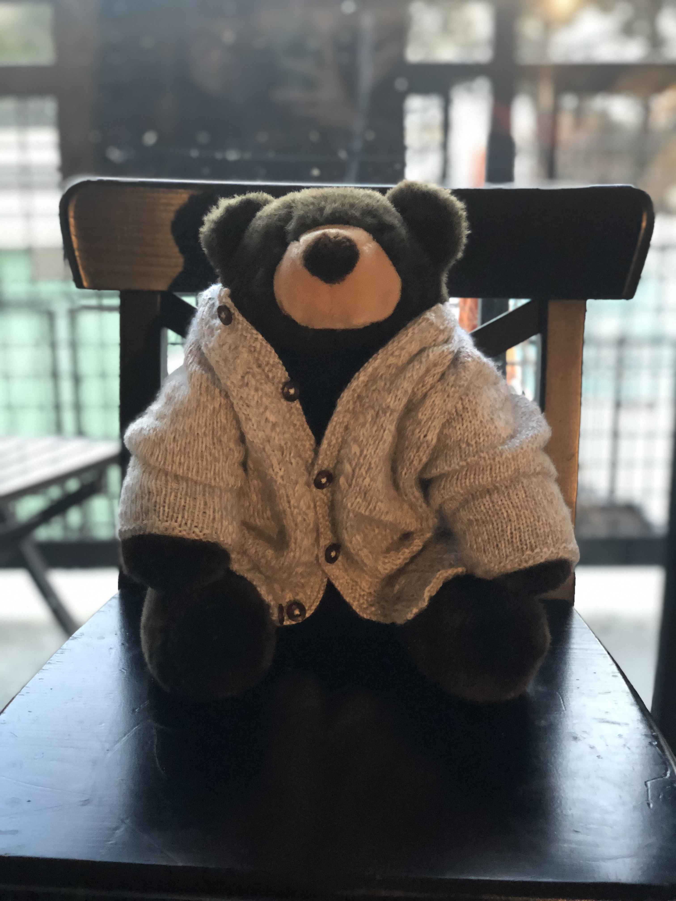

Crochet
Rubber Duck Decoding

| Yarn Type | Yarn Brand | Yarn Weight | Needle Size | Raverly Pattern |
|---|---|---|---|---|
| Cotton/Acrylic | Gazzal | Sport | 4mm | Yellow Rubber Duck |
Knit
Baby Cardigan
| Yarn Type | Yarn Brand | Yarn Weight | Needle Size | Raverly Pattern |
|---|---|---|---|---|
| Acrylic/Nylon | Patons Beehive | Sport | 3.75mm | Baby Vintage Cardigan |